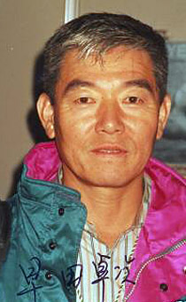

Takuji Hayata (JPN)
1964 Olympic Team and R Gold Medalist

Medal Total
Olympic Games: 2 Gold
World Championships: 1 Gold, 1 Bronze
Hayata was born on October 10, 1940.
Competition Results
1963
University Games: 1st Team, 3rd AA
1964
JPN Championships: 3rd AA
Olympic Games: 1st Team, 8th AA, 1st R
1965
JPN Championships: 4th AA
1967
Pre-Olympic Test Event: 8th AA, 2nd PB, 3rd R
1969
NHK Cup: 4th AA
1970
World Championships: 1st Team, 7th AA, 3rd HB, 4th R
This page was created on June 13, 2010.
© Gymn Forum